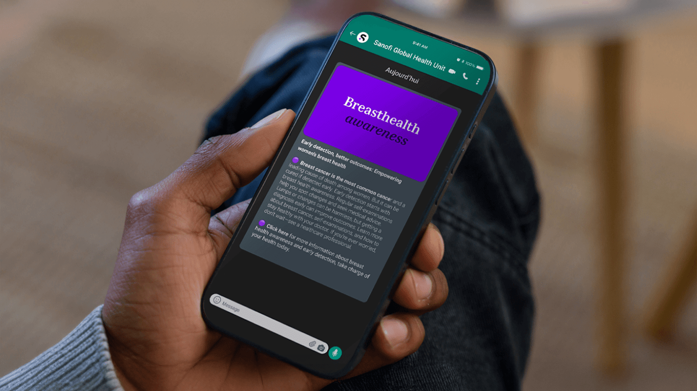
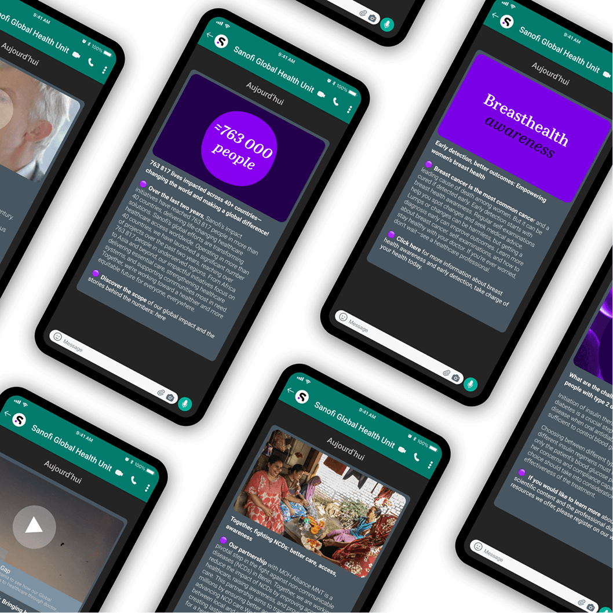

Sanofi Global Health Unit
Connecting Healthcare Professionals
Supporting better care by improving access to quality information

Service and Offer
Sector
Communication for better health
As millions of people worldwide lack access to essential healthcare, Sanofi's Global Health Unit aims to improve care quality for populations in low- and middle-income countries.
Sanofi supports this goal by providing practical support to healthcare professionals in the regions that need it most, particularly in Africa and Asia.
In countries where direct communication about medicines is restricted, Sanofi focuses on sharing guidance, scientific resources and insights from global health programs. This approach strengthens healthcare systems in areas with limited resources.
WhatsApp is the most widely used messaging platform in these regions. It’s proved to be the most effective way to reach healthcare professionals, prompting Sanofi’s Global Health Unit to launch a dedicated WhatsApp channel.
To develop this WhatsApp channel, Sanofi collaborated with frog, which helped create original content for an initial series of posts. This collaboration ensured the content was relevant and tailored to the needs of healthcare professionals in the target regions.
Subscribers to the channel receive direct information from laboratories. With quick and easy access to scientific and educational resources, thousands of healthcare professionals benefit from continuous learning. They can improve their practices and strengthen the positive impact on global health.

Care and communication
Project highlights
Challenge
Bridging health gaps
Sanofi's Global Health Unit wanted to provide reliable and accessible medical information to healthcare professionals in countries with pressing healthcare needs.
Solution
Expert care, shared
A dedicated WhatsApp channel was launched to share expert-reviewed medical content via the most widely used messaging platform in target regions.
Outcome
Making access universal
The channel enables ongoing learning by giving thousands of healthcare professionals fast, easy access to scientific and educational content.
Ongoing health impact
The first phase of Sanofi's Global Health Unit's WhatsApp communications channel was developed in collaboration with frog. frog contributed original content for the initial posts, ensuring relevance and alignment with the needs of healthcare professionals in target regions.
Covering key topics such as diabetes, cardiovascular disease and oncology, the channel supports continuous learning and improved healthcare delivery. Sanofi’s Global Health Unit remains committed to empowering healthcare providers with accessible, expert-reviewed information and strengthening global health outcomes, especially in underserved communities.
Thousands of healthcare professionals are given easy access to trusted medical information.